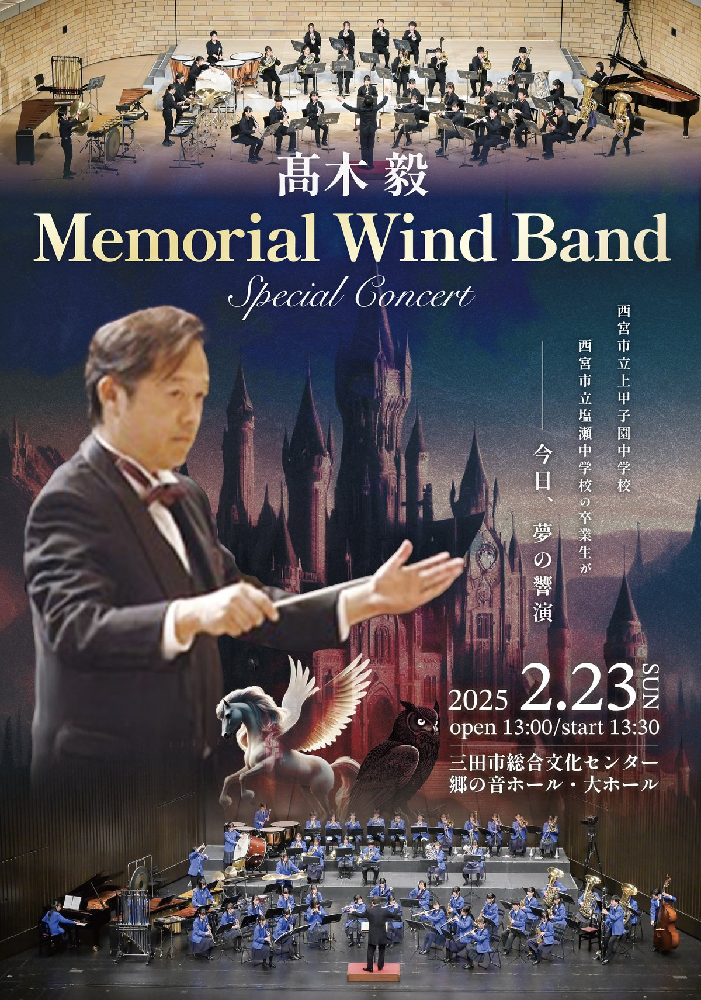

FLYER · CONCERT
髙木毅 Memorial Wind Band Special Concert
Concert Info
Date2025年2月23日（日）13:00開場 / 13:30開演
Venue三田市総合文化センター 鄕の音ホール・美ホール
出演西宮市立甲子園中学校・花園中学校 吹奏楽部 他
Program
- 吹奏楽楽曲（詳細はチラシをご確認ください）
Ticket
備考詳細はチラシをご確認ください
Design Notes
指揮者と吹奏楽団の集合写真を上下に配し、「今日、夢の競演」というテーマを白い鳥が大空へ羽ばたくイメージと重ねました。ネイビーと白の清潔感ある配色が、中学校吹奏楽部らしい清々しさを演出しています。髙木毅先生への敬意を込めた「Memorial」の文字は、ソリッドな英字フォントで力強く配置しました。